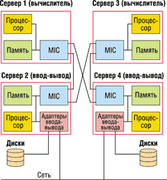
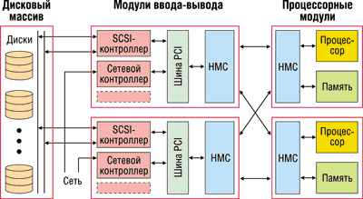
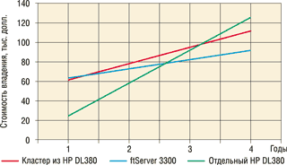

Борис Федосеев,
руководитель проектов, компания CPM
bfedoseyev@cpm.ru
С развитием "онлайнового сервиса" компьютеры превратились из вспомогательного инструмента для бизнеса в нечто такое, без чего некоторые виды бизнеса просто невозможны. В качестве примера назовем процессинг, биллинговые системы реального времени, автоматизированные системы управления технологическими процессами. Сбой компьютера, на котором работает любое такого рода приложение (их называют критичными), приводит не просто к временным неудобствам, а к остановке деятельности компании. До недавнего времени такие приложения оставались прерогативой специализированных машин и операционных систем, однако сейчас стало появляться подобное ПО, написанное для работы под управлением Microsoft Windows. В связи с этим логично задаться вопросом: насколько возможна безотказная работа в мире Windows?
Прежде чем говорить о степени надежности, стоит определить, кому это реально необходимо. Одна крайность - это упомянутые выше критичные для бизнеса приложения, другая - приложения, используемые конкретным человеком в личных целях (в этом случае невозможность работать с ними затрагивает только его одного). Где грань, отделяющая приложения, для которых надежность принципиально необходима, от тех, для которых это не важно? Какой критерий позволит ее нащупать? Нам представляется разумным оценить финансовые потери, связанные с остановкой компьютера и выполняемых на нем приложений. Пусть это будут как прямые потери, так и упущенная прибыль - обычно их сумму принято называть стоимостью простоя.
Для примера попытаемся приблизительно оценить стоимость часа простоя биллинговой системы, которую использует компания, предоставляющая услуги IP-телефонии по предоплаченным карточкам. Будем исходить из предположения, что остановка биллинговой системы вызывает полную остановку сервиса, так как все вновь позвонившие клиенты не авторизуются и не обслуживаются. Пусть компания работает со 120 входящими голосовыми каналами, и в среднем их загрузка составляет 40%, т. е. одновременно ведется 48 разговоров.
Оценим сначала прямые потери. Средняя стоимость минуты междугороднего разговора через оператора IP-телефонии равна 0,15 долл., или 9 долл. в час. Следовательно, час простоя 48 каналов обойдется в 432 долл.
Теперь попытаемся оценить упущенную прибыль. По статистике, продолжительность среднего телефонного разговора - 3 мин. Отсюда следует, что в рассматриваемой системе за каждые 3 мин начинается 48 звонков. Легко подсчитать, что в течение часа позвонят 960 клиентов. Пусть в случае простоя 15% позвонивших и не получивших сервиса людей принимают решение сменить провайдера. В соответствии с нашими допущениями за час простоя к другому провайдеру уйдут 144 человека.
Пусть каждый клиент в среднем приносит компании прибыль в 18 долл. (это предполагает, что клиент пользуется услугами компании в течение года, покупая одну карточку на 10 единиц раз в месяц, а прибыль компании составляет 15% от стоимости карточки). Таким образом, клиенты, ушедшие в результате простоя, могли бы принести прибыль в 2592 долл.
Таким образом, общие потери оператора IP-телефонии от часа простоя биллинговой системы составляют около 3 тыс. долл.
Сегодня при оценке того или иного технического решения обычно используется показатель совокупной стоимости владения (total coast of ownership, TCO). Величина TCO складывается из трех основных компонентов:
- единовременные затраты на покупку и ввод в эксплуатацию (иногда еще стоимость утилизации);
- текущие эксплуатационные расходы;
- вероятностные потери или стоимость простоя.
Немного терминологии
Определимся с терминологией, которая будет употребляться в дальнейшем. Под работоспособностью мы будем понимать исправное состояние отдельного компонента или целой системы. Под доступностью - готовность системы к выполнению полезной работы. Ясно, что работоспособность и готовность - отнюдь не синонимы. Система может оставаться доступной, даже если некоторые ее компоненты неработоспособны (например, если они продублированы). С другой стороны, работоспособная система может быть недоступна во время проведения регламентных работ.
Естественно, говоря о простое, мы имеем в виду именно состояние недоступности системы. В качестве количественной характеристики доступности обычно используется понятие коэффициента готовности. Он определяется как отношение времени, в течение которого система была доступна, ко времени, в течение которого она находилась в эксплуатации. Очевидно, что здесь речь не идет о конкретном сервере, этот коэффициент - величина статистическая и для конкретной системы характеризует вероятность пребывания ее в доступном состоянии.
И, наконец, собственно надежность - этот параметр показывает, насколько редко (или часто) система оказывается неработоспособной и, как следствие, - недоступной. Надежность характеризуется средним временем между отказами (Mean Time Between Failure, MTBF), или наработкой на отказ. Таким образом, доступность системы зависит, с одной стороны, от ее надежности, с другой - от времени восстановления рабочего состояния после отказа и, наконец, с третьей - от того, насколько часто и какой продолжительности приходится делать перерывы в работе при проведении регламентного обслуживания.
Впервые классификация с точки зрения доступности была предложена компанией Hewlett-Packard (http://www.hp.com). В соответствии с ней было выделено пять классов.
К первому классу относятся системы, где доступность обеспечивается только за счет надежности компонентов, из которых она построена. Второй класс образуют системы, в которых дополнительно применяются средства борьбы с последствиями отказов, т. е. принимаются меры для сокращения времени восстановления после отказа (например, резервное копирование). К третьему классу относят системы, в которых ко всему перечисленному выше добавляется резервирование (дублирование) отдельных компонентов, например, используются RAID-массивы, дублированные блоки питания и вентиляторы.
Четвертый и пятый классы имеют специальные названия. Системы четвертого класса обычно называют системами высокой доступности (High Availability, HA). Этот класс характеризуется резервированием не отдельных компонентов, а системы целиком. При этом считается, что в полученном комплексе устройств не должно быть ни одного компонента, единичный отказ которого приводил бы весь вычислительный комплекс в недоступное состояние (отсутствие единой точки отказа - Single Point Of Failure, SPOF).
И, наконец, пятый класс принято называть классом постоянной доступности (Continuous Availability, CA). Он характеризуется комплексом мер обеспечения отказоустойчивости не только на уровне аппаратных компонентов и ПО, но и специальных организационных мер для поддержания постоянной работы. В системах этого класса применяются специализированные операционные системы, разработанные для обеспечения безостановочной работы (например, NonStop Kernel для HP Non Stop, VOS для серверов Continuum фирмы Stratus). Кроме того, постоянной доступности невозможно добиться без налаженной системы поддержки, позволяющей своевременно диагностировать и заменить вышедшие из строя компоненты, разобраться с проблемами в ПО, провести регламентные работы с минимальным временем простоя.
Какая доступность нужна
Вернемся теперь к миру Windows. По-видимому, ни один здравомыслящий человек не будет использовать компьютеры, которые можно отнести к первому классу по доступности, в качестве серверов для сколько-нибудь критичных приложений. Сомнительно, что кому-нибудь подойдет сервер с коэффициентом готовности менее 0,98, что означает более 7 суток простоя в год. Компьютеры, относящиеся ко второму классу доступности, широко применяются в качестве серверов для некритичных приложений. Кроме упомянутого выше резервного копирования, для улучшения их доступности применяются программно-аппаратные устройства перезапуска при зависании и источники бесперебойного питания. За счет этих мер удается довести коэффициент готовности до 0,995, что в пересчете составляет около 2 суток простоя в год.
К третьему классу доступности относятся серверы, в которых, как пояснялось выше, продублирована часть компонентов - вентиляторы, источники питания, диски. При этом удается получить коэффициент готовности не лучше 0,999, или 9 ч простоя в год. Насколько это приемлемо, зависит от критичности приложений и допустимых потерь от простоя. Например, в обсуждавшемся выше примере с оператором IP-телефонии за пять лет эксплуатации потери от простоя при таком коэффициенте готовности могут составить примерно 130 тыс. долл.
Если вы проделали подобный расчет для своей компании и вас не устраивают размеры потерь при использовании первых трех классов серверов, стоит внимательнее присмотреться к классу HA.
Кластерные решения
Самое старое решение в классе HA - это кластеры. Вообще говоря, это хорошо известное решение, и тем не менее хотелось бы в двух словах остановиться на основных принципах его построения и вкладе в повышение надежности. Итак, два или несколько серверов (называемых узлами кластера) соединяются таким образом, чтобы, во-первых, иметь совместный доступ к некоторому дисковому пространству, а во-вторых, иметь возможность периодически передавать друг другу некий сигнал готовности. Если кластерное ПО в течение заданного времени не получает такого сигнала от одного из серверов, то принимается решение о том, что этот сервер отказал и его нагрузку следует перераспределить. Делается это путем перезапуска прикладной задачи на оставшихся в работоспособном состоянии серверах. В качестве упомянутого кластерного ПО выступает скрипт, специфичный для конкретного прикладного ПО и его конфигурации.
В чем достоинства кластеров? Во-первых, это открытое решение, и заказчик не оказывается привязан ни к какому конкретному производителю. Кроме того, кластер имеет дополнительные достоинства, если приходится использовать плохо написанное прикладное ПО - плохое настолько, что его зависания становятся основными причинами отказов. При этом зависает только один из серверов, и кластер в целом остается доступным.
Иногда в качестве достоинства кластера упоминают то обстоятельство, что за счет дополнительной аппаратуры одновременно приобретается и лучшая доступность, и лучшая производительность. Однако это не совсем так. Допустим, чтобы добиться требуемого времени отклика некоторого приложения, нужна производительность, втрое превышающая производительность одного сервера. Собрав кластер из нескольких таких серверов, можно получить требуемую производительность и время реакции. При этом вы надеетесь, что одновременно улучшили и доступность системы. Но это оказывается неверно, так как в случае отказа одного из узлов приложение по-прежнему будет выполняться, но время его реакции станет меньше необходимого, а это фактически означает, что оно недоступно. С другой стороны, если вас удовлетворяет производительность кластера с частично неработающими узлами, это значит, что полная производительность кластера и не была нужна вообще, часть аппаратуры фактически простаивает, работая только на повышение доступности.
Теперь о недостатках. При отказе одного из узлов кластера требуется перезапуск приложений, следовательно, в предоставлении сервиса непременно возникает перерыв. Для онлайновых приложений, например, управления технологическими процессами, это недопустимо. Следует также отметить, что готовый кластер нельзя купить - производители серверов поставляют только компьютеры (возможно, собранные в едином корпусе), включая все необходимые связи, но это еще не будет готовый к работе кластер. Потребуется время для написания и отладки скриптов. Не исключено, что написанием скриптов дело не ограничится, придется переписывать прикладное ПО, чтобы оно "знало" о том, что выполняется на кластере (cluster aware), и могло этим эффективно пользоваться. Как правило, производители предоставляют техническую поддержку на аппаратуру, но не на кластер целиком. Кластер требует более квалифицированной поддержки, чем, например, отдельный сервер. И, наконец, там, где используется лицензионное ПО, придется покупать несколько лицензий на ОС и приложения - по количеству узлов в кластере.
Альтернативы кластерам
Решения Marathon Technologies
Посмотрим теперь на существующие ныне альтернативы кластерам. В первую очередь хочется упомянуть о варианте, предлагаемом компанией Marathon Technologies (http://www.marathontechnologies.com). Внешне он напоминает кластер, но по сути сильно отличается от него. Берутся четыре одинаковых сервера любых производителей (рекомендуются, правда, несколько известных марок), которые группируются в пары, называемые картежами (tuples). В каждом из картежей один из серверов отвечает за собственно вычисления, второй - за ввод-вывод. Каждый из серверов-вычислителей связан каналами передачи данных с серверами ввода-вывода как в "своем", так и в "чужом" картеже (рис. 1). Для этого в каждый из четырех серверов устанавливается высокоскоростная PCI-карта с двумя оптическими интерфейсами производства компании Marathon (Marathon Interface Card, MIC). Вычисления и ввод-вывод в каждом из картежей происходят почти синхронно, и это позволяет принимать решение о неисправности серверов на основании сравнения данных, приходящих из "своего" и "чужого" картежа. Работой с дисками занимается только сервер ввода-вывода.
|  | Рис. 1. Архитектура отказоустойчивого решения компании Marathon.
|
Главное достоинство данной архитектуры в том, что она обеспечивает не только высокую доступность, но и защищенность от катастроф (Disaster Tolerance). Это достигается за счет того, что два картежа можно разнести на расстояние до 40 км, поскольку они связаны оптическими каналами данных. В результате система будет оставаться доступна, даже если здание с одним из картежей будет уничтожено, например, пожаром. Другое достоинство - малое (по сравнению с кластером) время восстановления работоспособности после отказа одного из серверов. К недостаткам следует отнести большие аппаратные затраты и, как следствие, высокую цену такого решения - фактически четыре сервера обеспечивают производительность одного. Кроме того, часть вычислительной мощности постоянно тратится на обмен данными и на их проверку. И еще один недостаток - принципиальная невозможность использования многопроцессорности.
Семейство ftServer
Другая альтернатива кластерам - семейство ftServer компании Stratus Technologies (http://www.stratus.com). Эта компания уже более 20 лет разрабатывает компьютеры, относящиеся к классу Continuous Availability, и в семействе ftServer применены комплексные подходы, характерные для класса CA. Собственно, только использование стандартной ОС Microsoft Windows заставляет отнести ftServer к классу HA. При создании ftServer компания Stratus разработала оригинальную аппаратную архитектуру, обеспечивающую надежность на уровне выше HA, построила целостную систему технической поддержки, направленную как на сокращение времени простоя после отказа, так и на предотвращение отказов, и, наконец, сделала все от нее зависящее для повышения надежности самой ОС Windows, полностью сохранив программную совместимость.
Охарактеризуем вкратце архитектуру этого решения (подробное описание можно найти на сайте http://www.ftserver.ru, см. также "Отказоустойчивые серверы ftServer", "BYTE/Россия", № 4'2002). Архитектура ftServer представляет собой развитие стандартной Intel-архитектуры в сторону увеличения надежности. В сильно упрощенном виде последнюю можно описать следующим образом: имеется процессор, занимающийся вычислениями, память, в которой хранятся данные и код программ, а также шина периферийных устройств (например, PCI) с включенными в нее устройствами. Наконец, имеется набор микросхем (НМС), все это соединяющий. Обычно он разделен на две части: первая связывает между собой процессор и память, вторая организует шину периферийных устройств.
Идея Stratus заключается в том, чтобы продублировать все компоненты, сделав это совершенно незаметно для ПО. Достигается это следующим образом: процессор, память и часть НМС объединяются в конструктивно обособленный модуль (процессорный модуль, рис. 2). Два или три таких модуля заставляют работать совершенно синхронно, так что в каждый момент времени состояние памяти и регистров процессора у них совершенно идентично. С точки зрения Windows это один компьютер. Отказ компонента обнаруживается путем сравнения данных на выходе всех процессорных модулей. Модуль, содержащий отказавший компонент, полностью выключается из работы.
|  |
| Рис. 2. Архитектура ftServer компании Stratus.
|
Часть НМС, организующая шину, сама шина и подключенные к ней платы периферийных контроллеров объединяются в модуль ввода-вывода (см. рис. 2). Таких модулей в ftServer два. В системе присутствуют по паре контроллеров каждого типа: один из пары подключен к одной шине, второй - к другой. В частности, существует пара SCSI-контроллеров, каждый из которых имеет доступ к дисковому массиву. В данном случае Windows "знает" о существовании пары шин и пар периферийных контроллеров, но скрывает это от прикладного ПО на уровне драйверов. Также на уровне драйверов обнаруживается отказ этих контроллеров или подключенных к ним устройств или каналов связи. Таким образом, на ftServer работает одна копия Windows и одна копия прикладного ПО, причем последнее полностью изолировано от зарезервированной аппаратуры.
Кроме повышения надежности, такая архитектура имеет некоторые другие полезные и интересные свойства. Например, обновлять BIOS в одном из процессорных модулей можно в то время, пока система работает на втором. Это сокращает регламентные остановки работы системы и повышает ее общую доступность.
Для повышения стабильности Windows компания Stratus оттестировала и сертифицировала драйверы всех аппаратных компонентов ftServer, полагая их одними из наиболее критичных программных компонентов системы. Следует оговориться, что использование устройств, драйверы которых не прошли этой процедуры, с ftServer не рекомендуется.
Главная изюминка системы поддержки - ее проактивность, т. е. способность не только реагировать на уже возникшие проблемы, но и по возможности их предотвращать. Для этого в ftServer присутствуют специализированные PCI-платы мониторинга с независимыми питанием и подключениями к локальной и телефонной сети (ftServer System Access Adapter, SAA). SAA наблюдает за работой системы и в случае отказа либо приближения некоторых параметров (например, температуры или частоты возникновения исправимых сбоев памяти) к опасной границе посылает в центр поддержки сообщение. В зависимости от типа проблемы центр поддержки может немедленно выслать запчасти или связаться с системными администраторами сервера. Разрешая центру поддержки удаленное наблюдение за системой, SAA, естественно, не позволяет получить доступ к пользовательским данным. Если тем не менее это кому-то кажется небезопасным, можно перейти к традиционной системе поддержки.
В чем недостатки ftServer? В отличие от кластеров, ftServer привязан к конкретному производителю и конкретному набору аппаратного обеспечения. Начальная стоимость аппаратной части ftServer выше стоимости кластера из сопоставимых по конфигурации серверов.
В чем достоинства? Во-первых, с точки зрения ПО это то же самое, что и обычный отдельно стоящий сервер. В результате не требуется модифицировать ПО и создавать специальные скрипты, как в случае кластера. От системного администратора требуется такая же квалификация, как при работе с обычными серверами. Время инсталляции и запуска в эксплуатацию также существенно меньше, чем для кластера. На ftServer запускается по одной копии ОС и приложений.
Доступность класса HA
Какой коэффициент готовности удается получить в классе серверов HA под управлением Windows? Для кластеров обычно приводят цифры 0,999-0,9999, что соответствует времени простоя от 9 ч до 50 мин в год. Компании Marathon и Stratus декларируют для своих решений значения коэффициента готовности, достигающие 0,99999, что равносильно 5 мин простоя в год. Нам представляется, что эта величина скорее равна лучшим показателям для кластеров или немного превосходит их. В рассмотренном выше примере с оператором IP-телефонии, учитывая найденную нами оценку стоимости часа простоя, за пять лет эксплуатации такой коэффициент готовности выльется в 15 тыс. долл. потерь от простоя.
На рис. 3 приведены графики, построенные на основе расчета совокупной стоимости владения для сервера третьего класса надежности (в качестве примера выбран HP ProLiant DL380); кластера из двух таких же серверов, относящегося к классу HA; и системы ftServer 3300, также относящейся к классу HA и обладающей сходными характеристиками. В расчете TCO были учтены начальная цена аппаратной части, стоимость лицензий на ПО, стоимость ввода в эксплуатацию, эксплуатационные расходы и стоимость простоя.
|  |
| Рис. 3. Сравнение стоимости владения для кластерa из HP DL380 и системы ftServer 3300.
|
***
Итак, рассмотрев отказоустойчивые решения на платформе Microsoft Windows, мы видим, что такие системы не только могут соответствовать критериям класса высокой доступности, но и по многим параметрам (включая коэффициент готовности) вплотную приблизились к классу постоянной доступности. Таким образом, применение серверов под управлением ОС Windows для выполнения критичных онлайновых приложений представляется вполне оправданным и целесообразным.